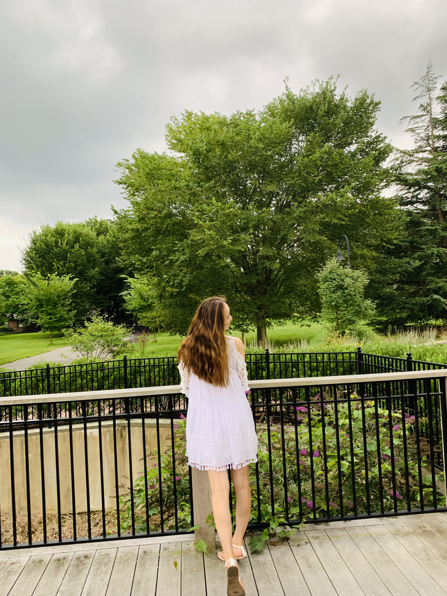

Joined a rigorous fellowship program, building 5 AI projects in 5 weeks. Participated in hackathons and attended in-real-life meetups to enhance technical skills and professional networking.
I’m an easy-going individual with a deep appreciation for nature. I enjoy gardening and love spending my free time exploring beautiful parks. Being outdoors and discovering new natural spaces brings me great joy and relaxation. I'm always excited about checking out new parks and getting fresh air to relax my brain and body. Each visit to a new park or natural area offers a unique experience and a chance to unwind, recharge, and gain a fresh perspective. This connection to nature not only enhances my well-being but also fosters a sense of gratitude and wonder for the world around me. Whether I'm planting new flowers or simply taking in the beauty of a tranquil landscape, these moments are a cherished part of my life.
I am a responsible and trustworthy professional capable of thriving in fast-paced environments. As a good listener, quick learner, and effective team player, I excel in adapting to new challenges and contributing to collaborative efforts. Always motivated towards achieving my goals, I bring enthusiasm and dedication to every project I undertake. I consistently assist my team, tackle problems proactively, and offer innovative solutions to help us achieve our collective goals. My commitment to teamwork and problem-solving ensures that I contribute effectively to project success and support my colleagues in overcoming obstacles. I approach each task with a sense of ownership and a focus on delivering high-quality results, while fostering a positive and productive work environment.
You may find me hereI am deeply passionate about technology and driven by a continuous desire to learn and grow. With a strong commitment to enhancing my technical knowledge and skills, I embrace every opportunity to expand my expertise. My enthusiasm for tech fuels my ambition to stay ahead of industry trends and make meaningful contributions. I am dedicated to personal and professional development, striving to excel and evolve in the ever-changing tech landscape.
Joined a rigorous fellowship program, building 5 AI projects in 5 weeks. Participated in hackathons and attended in-real-life meetups to enhance technical skills and professional networking.

Supporting participants in the CodePath Technical Interview Prepcourses, attending class sessions, and monitoring Zoom chat for questions. move between breakout rooms to assist students in small groups with technical question

Provided 1:1 mentorship and assignment review for students from diverse backgrounds and low-resourced communities. Contributed to a unique model that creates opportunities, builds community-beneficial technology, and supports diversity in the tech industry.
Thank you for taking the time to visit my personal portfolio. I appreciate your interest in my work and skills. If you have any questions, comments, or just want to get in touch, please feel free to reach out to me through any of the contact information provided below. I look forward to hearing from you!